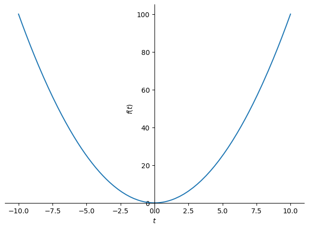
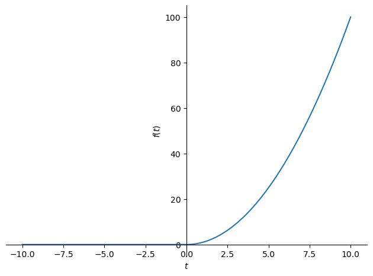
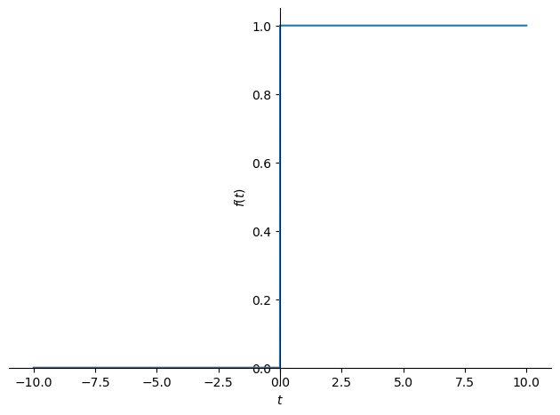

ラプラス変換
絶対可積分性
フーリエ変換は無限区間で定義されかつ非周期関数に対するフーリエ解析の方法であった．関数 \(f(t)\) が \([-\infty, \infty]\) で区分的に滑らかで絶対可積分である場合，関数 \(f(t)\) のフーリエ変換と逆フーリエ変換は以下で与えられた．
\[
F \left ( \omega \right ) = \int^{\infty}_{-\infty} f\left ( t \right ) e^{-i\omega t} dt, \quad f(t) = \frac{1}{2 \pi} \int^{\infty}_{-\infty} F \left ( \omega \right ) e^{i \omega t} d
\]
フーリエ変換を行う上で関数が以下に示す絶対可積分であることは非常に厳しい条件である．
\[
\int_{-\infty}^{\infty}|f(x)| dx<\infty
\]
これは言い換えると \(f(\pm \infty)=0\) でなければ絶対可積分を満たさない．例えば，以下の定数関数を考える．
\[
f(t) = 1
\]
非常に簡単な関数ながらも区間 \([-\infty, \infty]\) で関数の絶対値 \(|f(x)|\) の積分を考えるとその値は無限大となり，絶対可積分を満たさない．実際にフーリエ変換 \(F(\omega)\) を考えてみても，
\[\begin{split}
\begin{align}
F \left ( \omega \right ) &= \int^{\infty}_{-\infty} f\left ( t \right ) e^{-i\omega t} dt \\
&= \int^{\infty}_{-\infty} 1 \times e^{-i\omega t} dt \\
&= \int^{\infty}_{-\infty} e^{-i\omega t} dt \\
&= \left[\frac{e^{-i \omega \epsilon}}{-i \omega}\right]_{-\infty}^{\infty}
\end{align}
\end{split}\]
となり収束しないことがわかるかと思う．上記のような絶対可積分を満たさないような関数に対して考案された ラプラス変換 を学ぶ．
ラプラス変換
関数 \(f(t)\) について \(t \geq 0\) のときは \(e^{-ct}\) を \(t < 0\)のときは \(0\) を掛けた関数 \(f'(t)\) をフーリエ変換することを考える．
\[\begin{split}
f'(t)=\begin{cases}f(t)e^{-ct} & 0 \leq t \\ 0 & t<0\end{cases}
\end{split}\]
この関数 \(f'(t)\) に対するフーリエ変換を求める．
\[\begin{split}
\begin{align}
F'(\omega) &= \int_{-\infty}^{\infty} f^{\prime}(t) e^{-i \omega t} d t \\
&= \int_{-\infty}^{0} 0 \cdot e^{-i \omega t} d t+\int_{0}^{\infty} f(t) e^{-c t} \cdot e^{-i \omega t} dt \\
&= \int_{0}^{\infty} f(t) e^{-(c + i\omega) t} d t \\
&= \int_{0}^{\infty} f(t) e^{-s t} d t, \quad s=c + i\omega \\
\end{align}
\end{split}\]
この積分を ラプラス変換 と呼ぶ．
\[
F(s) = \int_{0}^{\infty} f(t) e^{-s t} d t
\]
このとき，\(F(s)\) を \(s\) 関数 や 像関数 と，積分対象である \(f(t)\) を \(t\) 関数 や 原関数 と呼ぶ．厳密には上記のラプラス変換は 片側ラプラス変換 といい，以下の変換を 両側ラプラス変換 という．
\[
F(s) = \int_{-\infty}^{\infty} f(t) e^{-s t} d t
\]
両側ラプラス変換は積分範囲が \([-\infty, \infty]\) であることに注意されたい．
\(e^{-ct}\) の役割
実際， \(e^{-ct}\) は急速に \(0\) に収束する関数であるので，ラプラス変換における \(e^{-ct}\) は無限区間で \(f(t)\) を収束させ，絶対可積分性を満たす役割を持つ．
\[
f(\infty) \cdot e^{-s+\infty}=0 \in \lim _{t \rightarrow \infty} f(t) e^{-s t}=0
\]
逆ラプラス変換
ラプラス変換は \(\pm \infty\) での収束を保証するために拡張されたフーリエ変換であり，以下の逆ラプラス変換も導出できる．
\[
f(t)=\frac{1}{2 \pi i} \int_{c-i \infty}^{c+i \infty} F(s) e^{s t} d s, \quad t \geq 0
\]
逆ラプラス変換の式を見てもわかるように積分区間が複素空間であるため 複素積分 となる．
逆ラプラス変換の導出
\(f(t)\) に対して \(\pm \infty\) で収束するよう工夫した関数 \(f'(t)\) を考える．
\[\begin{split}
f'(t)=\begin{cases}f(t)e^{-ct} & 0 \leq t \\ 0 & t<0\end{cases}
\end{split}\]
\(f'(t)\) のフーリエ変換 \(F'(\omega)\) と逆フーリエ変換は以下で与えられる．
\[
F^{\prime}(\omega)=\int_{-\infty}^{\infty} f^{\prime}(t) e^{-i \omega t} d t = \int_{0}^{\infty} f(t) e^{-(c+i \omega) t} d t, \quad f^{\prime}(t)=\frac{1}{2 \pi} \int_{-\infty}^{\infty} F^{\prime}(\omega) e^{i \omega t} d \omega
\]
このとき，\(f'(t)\) は \(t \geq 0\) で \(f(t)e^{-ct}\) であるので逆フーリエ変換は以下のようになる．
\[
f^{\prime}(t)=f(t)e^{-ct}=\frac{1}{2 \pi} \int_{-\infty}^{\infty} F^{\prime}(\omega) e^{i \omega t} d \omega, \quad t \geq 0
\]
ここで両辺に \(e^{ct}\) をかけて整理する．
\[\begin{split}
\begin{align}
f(t) e^{-ct} \cdot e^{c t}&=\frac{1}{2 \pi} \int_{-\infty}^{\infty} F^{\prime}(\omega) e^{i \omega t} \cdot e^{c t} d \omega, \quad t \geq 0 \\
&=\frac{1}{2 \pi} \int_{-\infty}^{\infty} F^{\prime}(\omega) e^{(c+i \omega) t} d \omega
\end{align}
\end{split}\]
\(s=c+i\omega\) で変数変換をすると
\[\begin{split}
\begin{align}
f(t) &=\frac{1}{2 \pi} \int_{c-i \infty}^{c+i \infty} F^{\prime}\left(\frac{s-c}{i}\right) e^{s t} \cdot \frac{1}{i} d s \\
&=\frac{1}{2 \pi i} \int_{c-i \infty}^{c+i \infty} F^{\prime}\left(\frac{s-c}{i}\right) e^{s t} d s
\end{align}
\end{split}\]
となる．ここで再びフーリエ変換の式
\[
F^{\prime}(\omega)=\int_{-\infty}^{\infty} f^{\prime}(t) e^{-i \omega t} d t = \int_{0}^{\infty} f(t) e^{-(c+i \omega) t} d t
\]
に戻り，\(\omega = \frac{s-c}{i}\) をフーリエ変換の式に代入すると，\(F(s) = F^{\prime}\left(\frac{s-c}{i}\right)\) ということがわかる．これを途中まで導出した \(f(t)\) に代入すると逆ラプラス変換が導出できる．
\[
f(t)=\frac{1}{2 \pi i} \int_{c-i \infty}^{c+i \infty} F(s) e^{s t} d s, \quad t \geq 0
\]
以上で逆ラプラス変換を導出できた．
ラプラス変換の具体例
では，ラプラス変換の具体例として主要な関数のラプラス変換を確認する．
ステップ関数
次の関数 \(f(t)\) のラプラス変換を求める．
\[\begin{split}
f(t)= \begin{cases}1 & 0 \leq t \\ 0 & t<0\end{cases}
\end{split}\]
解答は以下で確認できる．
\[\begin{split}
\begin{align}
F(s) &=\int_{0}^{\infty} f(t) e^{-s t} d t \\
&=\int_{0}^{\infty} 1 \cdot e^{-s t} d t \\
&=\left[\frac{e^{-s t}}{-s}\right]_{0}^{\infty} \\
&=\frac{e^{-s \times \infty}}{-s}-\frac{e^{-s \times 0}}{-s} \\
&=0+\frac{1}{s} =\frac{1}{s}
\end{align}
\end{split}\]
デルタ関数
次の関数 \(\delta(t)\) のラプラス変換を求める．
\[\begin{split}
\begin{align}
&\delta(t)=0 \\
&\int_{-\infty}^{\infty} g(t) \delta(t) d t=g(0)
\end{align}
\end{split}\]
解答は以下で確認できる．
\[\begin{split}
\begin{align}
F(s) &=\int_{0}^{\infty} f(t) e^{-s t} d t \\
&=\int_{0}^{\infty} \delta(t) e^{-s t} d t \\
&=\int_{-\infty}^{\infty} \delta(t) e^{-s t} d t \\
&=e^{-s \cdot 0} \\
&=1
\end{align}
\end{split}\]
第三行目ではデルタ関数の二つ目の性質を利用している．
指数関数
次の指数関数 \(f(t)\) のラプラス変換を求める．
\[
f(t)=e^{at}
\]
解答は以下で確認できる．
\[\begin{split}
\begin{align}
F(s) &=\int_{0}^{\infty} f(t) e^{-s t} d t . \\
&=\int_{0}^{\infty} e^{a t} e^{-s t} d t . \\
&=\int_{0}^{\infty} e^{(a-s) t} d t \\
&=\left[\frac{e^{(a-s) t}}{a-s}\right]_{0}^{\infty} \\
&=\frac{e^{(a-s) \cdot \infty}}{a-s}-\frac{e^{(a-s) \cdot 0}}{a-s} \\
&=\frac{1}{s-a}
\end{align}
\end{split}\]
冪関数
次の \(n\) 次の冪関数 \(f(t)\) のラプラス変換を求める．
\[
f(t)=t^n
\]
解答は以下で確認できる．
一般化された \(t^n\) の結果は
\[
F(s)=\frac{n!}{s^{n+1}}
\]
であり，この結果は \(t, t^2, ...\) のラプラス変換を繰り返すことで導出できる．ここでは，\(n=1,2\) の場合を示す．
\(n=1\)のときのラプラス変換
\[\begin{split}
\begin{align}
F(s)&=\int_{0}^{\infty} t e^{-s t} d t \\
&=\left[t \frac{e^{-s t}}{-s}\right]_{0}^{\infty}-\int_{0}^{\infty} \frac{e^{-st}}{-s} d t\\
&=\infty \cdot \frac{e^{-s \cdot \infty}}{-s}-0 \cdot \frac{e^{-s \cdot 0}}{-s}+\frac{1}{s} \int_{0}^{\infty} e^{-s t} d t \\
&=\frac{1}{s} \int_{0}^{\infty} e^{-s t} d t\\
&=\frac{1}{s}\left[\frac{e^{-s t}}{-s}\right]^{\infty}_{0}\\
&=\frac{1}{s}\left\{\frac{e^{-s \cdot \infty}}{-s}-\frac{e^{-s \cdot 0}}{-s}\right\}\\
&=\frac{1}{s^2}
\end{align}
\end{split}\]
\(n=2\)のときのラプラス変換
\[\begin{split}
\begin{align}
F(s)&=\int_{0}^{\infty} t^2 e^{-s t} d t \\
&=\left[t^{2} \cdot \frac{e^{-s t}}{-s}\right]_{0}^{\infty}-\int_{0}^{\infty} 2 t \frac{e^{-s t}}{-s} d t \\
&=\infty \cdot \frac{e^{-s \cdot \infty}}{-s}-0 \cdot \frac{e^{-s \cdot 0}}{-s}+\frac{2}{s} \int_{0}^{\infty} t \cdot e^{-s t} d t \\
&=\frac{2}{s^{3}}
\end{align}
\end{split}\]
三角関数
次の角速度表記の \(\cos\) 関数のラプラス変換を求める．
\[
f(t) = \cos \omega t
\]
解答は以下で確認できる．
\[\begin{split}
\begin{align}
F(s) &=\int_{0}^{\infty} \cos \omega t e^{-s t} d t \\
&=\int_{0}^{\infty} \frac{e^{i \omega t} + e^{-i \omega t}}{2} \cdot e^{-s t} d t \\
&=\frac{1}{2} \int_{0}^{\infty} e^{(i \omega-s) t} d t+\frac{1}{2} \int_{0}^{\infty} e^{-(i \omega+s) t} d t . \\
&=\frac{1}{2}\left[\frac{e^{(i \omega-s) t}}{i \omega-s}\right]_{0}^{\infty}+\frac{1}{2}\left[\frac{e^{-(i \omega+s) t}}{-i \omega-s}\right]_{0}^{\infty}
&=\frac{1}{2}\left\{\frac{e^{(i \omega-s) \cdot \infty}}{i \omega - s}-\frac{e^{(i \omega-s) \cdot 0}}{i \omega - s}\right\}\\
&\quad +\frac{1}{2}\left\{\frac{e^{-(i \omega+s) \cdot \infty}}{-i \omega - s}-\frac{e^{-(i \omega+s) \cdot 0}}{-i \omega - s}\right\}\\
&=\frac{1}{2}\left(0-\frac{1}{i \omega-s}\right)+\frac{1}{2}\left(0-\frac{1}{-i \omega -s}\right)\\
&=\frac{1}{2} \cdot \frac{-1}{i \omega-s}+\frac{1}{2} \cdot \frac{1}{i \omega+s}\\
&=\frac{1}{2} \cdot \frac{-(i \omega+s)+i \omega-s}{(i w-s) \cdot(i \omega+s)}\\
&=\frac{1}{2} \cdot \frac{2 s}{s^{2}+\omega^{2}}\\
&=\frac{s}{s^{2}+\omega^{2}}
\end{align}
\end{split}\]
続いて，\(\sin\) 関数のラプラス変換を求める．
\[
f(t) = \sin \omega t
\]
解答は以下で確認できる．
\[\begin{split}
\begin{align}
F(s) &=\int_{0}^{\infty} \sin \omega t e^{-s t} d t \\
&=\int_{0}^{\infty} \frac{e^{i \omega t} - e^{-i \omega t}}{2i} \cdot e^{-s t} d t \\
&=\frac{1}{2i} \int_{0}^{\infty} e^{(i \omega-s) t} d t-\frac{1}{2i} \int_{0}^{\infty} e^{-(i \omega+s) t} d t \\
&=\frac{1}{2i}\left[\frac{e^{(i \omega-s) t}}{i \omega-s}\right]_{0}^{\infty}-\frac{1}{2i}\left[\frac{e^{-(i \omega+s) t}}{-i \omega-s}\right]_{0}^{\infty}
&=\frac{1}{2i}\left\{\frac{e^{(i \omega-s) \cdot \infty}}{i \omega - s}-\frac{e^{(i \omega-s) \cdot 0}}{i \omega - s}\right\}\\
&\quad +\frac{1}{2i}\left\{\frac{e^{-(i \omega+s) \cdot \infty}}{-i \omega - s}-\frac{e^{-(i \omega+s) \cdot 0}}{-i \omega - s}\right\}\\
&=\frac{1}{2i}\left(0-\frac{1}{i \omega-s}\right)+\frac{1}{2i}\left(0-\frac{1}{-i \omega -s}\right)\\
&=\frac{1}{2i} \cdot \frac{-1}{i \omega-s}+\frac{1}{2i} \cdot \frac{1}{i \omega+s}\\
&=\frac{1}{2i} \cdot \frac{i \omega+s+i \omega-s}{(i w-s) \cdot(i \omega+s)}\\
&=\frac{1}{2i} \cdot \frac{2 i \omega}{s^{2}+\omega^{2}}\\
&=\frac{\omega}{s^{2}+\omega^{2}}
\end{align}
\end{split}\]
ラプラス変換の性質
ラプラス変換にはフーリエ変換と同様に微分方程式を解く上で役立つ性質がいくつかある．
ラプラス変換の一対一対応
関数 \(f(t), g(t)\) をラプラス変換した結果 \(F(s), G(s)\) について一対一対応が成立
\[
f(t) \neq g(t) \Rightarrow F(s) \neq G(s)
\]
言い換えると，逆関数（=逆ラプラス変換）が存在することを示している．一方で，\(f(t) \neq g(t) \Rightarrow F(s) = G(s)\) となるときは一対一対応でないという．このとき逆ラプラス変換は一意に定まらないがラプラス変換ではそのような関数がないことが示されている．次回説明する微分方程式を解く際に重要な性質となる．
ラプラス変換の線形性
関数 \(f(t)\) のラプラス変換を \(F(s)\) とし，この処理を \(\mathcal{L}(f(t))\) とする．
\[
\mathcal{L}(f(t)) = F(s)
\]
関数 \(f(t),g(t)\) について以下の線形性が成立する．
\(f(t)\) の定数倍 \(cf(t)\) のラプラス変換の性質
\[
\mathcal{L}(c f(t))=c \mathcal{L}(f(t))
\]
証明はクリックで確認できる．
\[\begin{split}
\begin{align}
\mathcal{L}(c f(t)) &=\int_{0}^{\infty} c f(t) e^{-s t} d t \\
&=c \int_{0}^{\infty} f(t) e^{-s t} d t \\
&=c \mathcal{L}(f(t))
\end{align}
\end{split}\]
\(f(t)\)と \(g(t)\) の和に関するラプラス変換の性質
\[
\mathcal{L}(f(t) \pm g(t))=\mathcal{L}(f(t))+\mathcal{L}(g(t))
\]
証明はクリックで確認できる．
\[\begin{split}
\begin{align}
\mathcal{L}(f(t) \pm g(t)) &=\int_{0}^{\infty}\{f(t) \pm g(t)\} e^{-s t} d t \\
&=\int_{0}^{\infty} f(t) e^{-s t} d t \pm \int_{0}^{\infty} g(t) e^{-s t} d t \\
&=\mathcal{L}(f(t)) \pm \mathcal{L}(g(t))
\end{align}
\end{split}\]
ラプラス変換の推移則
関数 \(f(t)\) のラプラス変換が \(F(s)\) のとき， \(e^{-at}f(t)\) のラプラス変換は \(F(s+a)\) となる．
\[
\mathcal{L}\left(e^{-a t} f(t)\right)=F(s+a)
\]
証明はクリックで確認できる．
\[\begin{split}
\begin{align}
\mathcal{L}\left(e^{-\alpha t} f(t)\right) &=\int_{0}^{\infty} e^{-\alpha t} f(t) e^{-s t} d t \\
&=\int_{0}^{\infty} f(t) e^{-(s+a) t} d t \\
&=F(s+a)
\end{align}
\end{split}\]
ラプラス変換の相似則
関数 \(f(t)\) のラプラス変換が \(F(s)\) のとき， \(f(at), a>0\) のラプラス変換は \(\frac{1}{a}F\left(\frac{s}{a}\right)\) となる．
\[
\mathcal{L}(f(a t))=\frac{1}{a} F\left(\frac{s}{a}\right)
\]
証明はクリックで確認できる．
\[\begin{split}
\begin{align}
\mathcal{L}(f(a t)) &=\int_{0}^{\infty} f(a t) e^{-s t} d t \\
&=\int_{0}^{\infty} f(u) e^{-s \cdot \frac{u}{a}} \frac{1}{a} d u \\
&=\frac{1}{a} \int_{0}^{\infty} f(u) e^{-\frac{s}{a} u} d u \\
&=\frac{1}{a} F\left(\frac{s}{a}\right)
\end{align}
\end{split}\]
ラプラス変換の導関数の性質
関数 \(f(t)\) のラプラス変換 \(\mathcal{L}(f(t))\) と関数 \(f(t)\) の\(n\) 次導関数 \(f^{(n)}(t)\) には以下の関係がある．
\[\begin{split}
\begin{align}
\mathcal{L}\left(f^{(n)}(t)\right)=&s^{n} F(s)-s^{n-1} f(0)-s^{n-2} f^{\prime}(0) - \\
&\cdots-s f^{(n-2)}(0)-f^{(n-1)}(0)
\end{align}
\end{split}\]
証明はクリックで確認できる．
フーリエ変換の場合と同様に \(f(t)\) の\(n\) 次導関数 \(f^{(n)}(t)\) のラプラス変換の \(n\) について \(f'(t), f''(t),\ldots\) と個々に確認すると導関数の性質を導出できる．ここでは1次導関数のラプラス変換を確認する．
\[\begin{split}
\begin{align}
\mathcal{L}\left(f^{\prime}(t)\right)&= \int_{0}^{\infty} f^{\prime}(t) e^{-s t} d t \\
&= {\left[f(t) e^{-s t}\right]_{0}^{\infty} } -\int_{0}^{\infty} f(t)\left\{e^{-s t}\right\}^{\prime} d t \\
&=f(\infty) e^{-s \cdot \infty}-f(0) \cdot e^{-s \cdot 0}-(-s) \int_{0}^{\infty} f(t) e^{-s t} d t\\
&=0-f(0) \cdot 1+s \int_{0}^{\infty} f(t) e^{-s t} d t \\
&=s \mathcal{L}(f(t))-f(0) \\
&=s F(s)-f(0)
\end{align}
\end{split}\]
ただし三行目では \(f(\infty) \cdot e^{-s+\infty}=0 \Leftrightarrow \lim _{t \rightarrow \infty} f(t) e^{-s t}=0\) を利用している．
Pythonでラプラス変換
では，sympyを用いてラプラス変換を実行する．フーリエ変換と同様にプログラムで求められない場合もあるので設定する関数には注意されたい．
まず以下でラプラス変換する関数を定義する．

<sympy.plotting.plot.Plot at 0x7f99a95628e0>
Sympyではフーリエ変換と同様にラプラス変換を行う関数laplace_transform(関数, t, s)が定義されている．noconds=Trueと指定すると収束性に関する結果を除いて関数のみがreturnされる．変数 s を定義して実行する．
\[\displaystyle \frac{2}{s^{3}}\]
Sympyは逆ラプラス変換もサポートしている．inverse_laplace_transform(関数, s, t)で実行できる．解析的に求められない場合はInverseLaplaceTransform が返ってくる．
\[\displaystyle t^{2} \theta\left(t\right)\]

<sympy.plotting.plot.Plot at 0x7f99c8bb1d00>
式でも見てきたように \(t<0\) で関数が \(0\) をとっていることを確認されたい．
また逆ラプラス変換でreturnされる結果には\(\theta(t)\)が含まれているが，これはヘビサイド関数を示している．ヘビサイド関数はステップ関数とも呼ばれ以下で定義される．
\[\begin{split}
f(t)= \begin{cases}1 & 0 \leq t \\ 0 & t<0\end{cases}
\end{split}\]
\[\displaystyle \theta\left(t\right)\]

<sympy.plotting.plot.Plot at 0x7f99c8da7190>